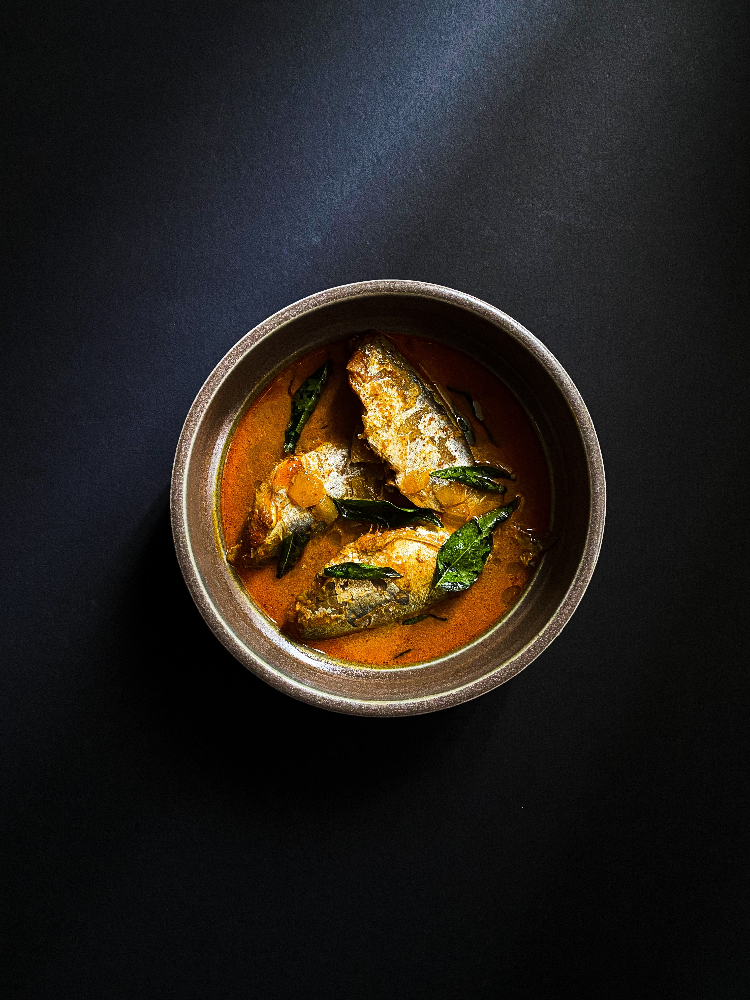

Fish curry

Description
Fish curry, also known as Meen kulambu(Tamil), is an Indian and Goan dish. It consists of sardines semi-stewed in a Kerala-style curry with assorted vegetables, such as okra or onions. It is usually served with rice or tapioca. The dish is most popular in Kerala, Goa, and Sri Lanka, where rice and fish are staple foods. Other variations may include adding tamarind juice or coconut milk.
Ingredients
- 3 tablespoons canola oil, divided 2 teaspoons Dijon mustard
- 1 teaspoon ground black pepper
- 1 1/2 teaspoons salt, divided
- 4 white fish fillets
- 1 medium onion, coarsely chopped
- 4 cloves garlic, roughly chopped
- 1 (1 inch) piece fresh ginger root, peeled and chopped
- 5 cashew halves
- 2 teaspoons cayenne pepper, or to taste
- 1 teaspoon ground cumin
- 1 teaspoon ground coriander
- 1 teaspoon white sugar
- 1/2 teaspoon ground turmeric
- 1/2 cup chopped tomato
- 1/4 cup vegetable broth
- 1/4 cup chopped fresh cilantro
Steps
- 1/4 cup chopped fresh cilantro
- While the fish is marinating, combine onion, garlic, ginger, and cashews in a blender or food processor; pulse until mixture forms a paste.
- Preheat the oven to 350 degrees F (175 degrees C).
- Heat remaining 1 tablespoon oil in a skillet over medium-low heat. Add cashew paste; cook and stir until fragrant, 1 to 2 minutes. Add cayenne pepper, remaining 1 teaspoon salt, cumin, coriander, sugar, and turmeric; cook and stir for 5 minutes. Stir in tomato and broth.
- Remove fish from marinade and shake off excess; discard remaining marinade. Arrange fish in a baking dish and pour sauce over top.
- Bake, covered, in the preheated oven until fish flakes easily with a fork, about 30 minutes. Garnish with cilantro.